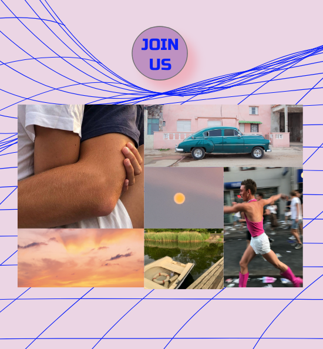
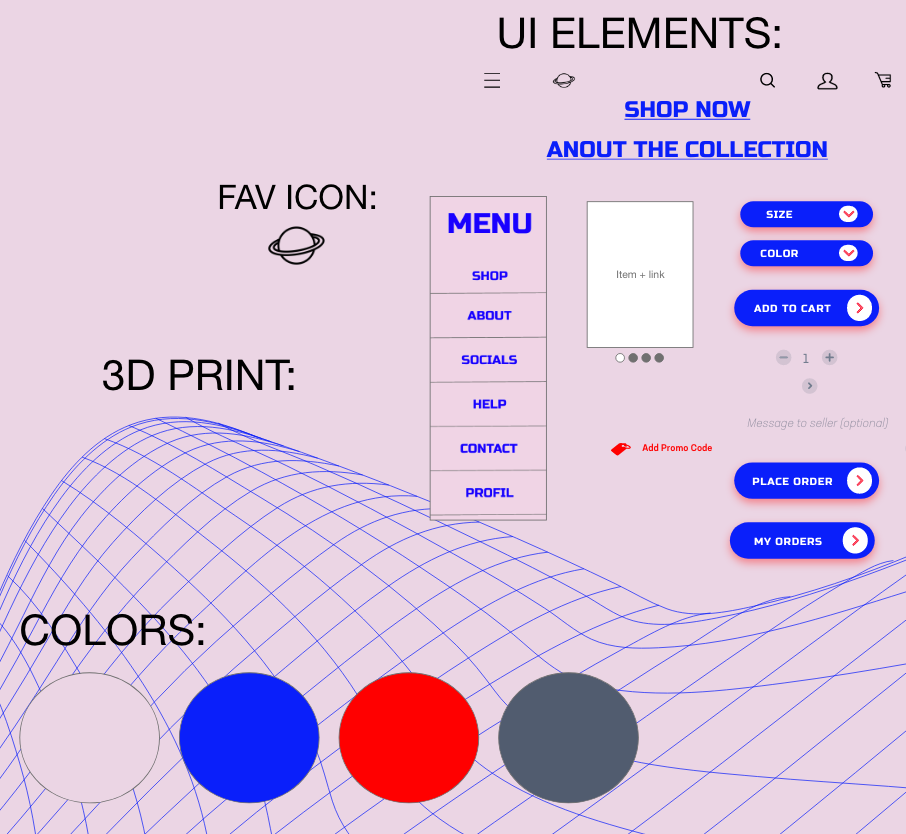
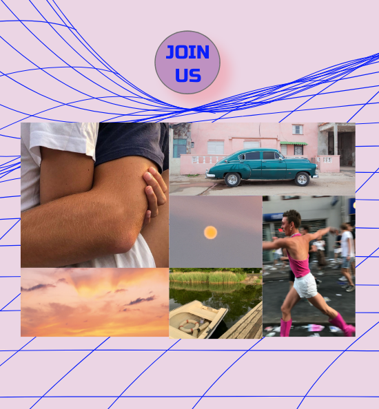
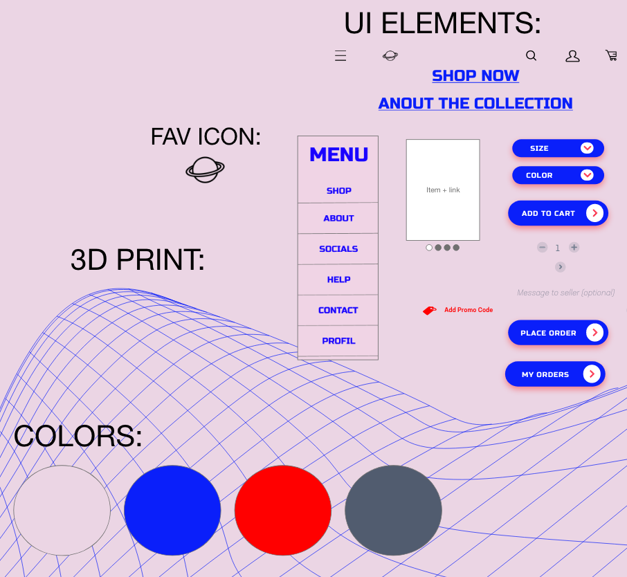

TEMA 2
Tema navn: 02_web/ grundlæggende web
Projekt: "Singapore, Gardens by the Bay"
Style: Modern Futuristic
Om projektet
På dette tema blev jeg introduceret til design af digitale brugergrænseflader og responsivt design.
Jeg blev tildelt stilarten ‘modern futuristic’.
Jeg startede med at samle mine ideer, udarbejdede et moodboard og påbegyndte et styetile, hvor jeg undersøgte typografi og tekstopsætning. Her fik jeg kendskab til Adobe XD hvor jeg senere udarbejdede en wireframe, med et gridbaseretlayout, content og opsætning af tekster til min hjemmeside.
Mit indhold, både grafik og billedebehandling, udførte jeg i Photoshop. Og udefra min wireframe lavede jeg et layoutdiagram.
Farver på sitet:
Jeg benyttede en komplementær farveharmoni, hvor jeg lavede den neon-grønne nuance som basis farven, hvilket også gav mig en lilla nuance der passede ind, i min tildelte stilart ‘modern futuristic’ som bl.a. karakteriseres med ‘fluorescent colors’.
Efterfølgende brugte jeg HTML og CSS til at kode min hjemmeside responsivt. Her fulgte jeg mit layoutdiagram og uploade til eget webdomæne.


TEMA 3
Tema navn: 03_ux/ grundlæggende UX
Projekt: Youngmann Designs
Ide
Jeg ønskede at skabe et ungt, bæredygtigt og unisex brand. Der sætter fokus på at hylde diversitet og gøre en forskel for miljøet. Jeg ville gerne lave en webshop, for dem der vil være med til at gøre en forskel.
Farver på sitet: Hvid eller lys baggrund.
Print: med et grid som print i neon grøn eller blå, som kontrast til baggrunden.
Fonts: Sans serifs der er simple og store billeder
Prototype
Efter at have fortaget desk-research, samt undersøgt markedet og forbrugeren vha. en spørgeundersøgelse ift. e-handel, begyndte jeg at udvikle en wireframe. Efterfølgende lavede jeg min wireframe til en prototype i Adobe XD. Prototypen er responsiv og skal illustere hvordan websitet skal se ud og fungere.
PRØV PROTOTYPEEfterfølgende blev vi introduceret til "tænke-højt-testen". Denne test lader man sin testperson navigere i sitet uden skaberens indvendiger. Testpersonen skal tænke højt om alt vedkommende ser og gør. Fx. "finder en t-shirt", "vælger en størrelse, "vælger en farve", "putter den i kurven". Man beder test-personen udføre min. 3 forskellige opgaver/ handlinger på siden, fx.køb en t-shirt eller opret dig som bruger.
Efter at have fortaget denne test, fik jeg behandlet resultaterne og dermed justeret i prototypen, fx. skulle jeg gøre min brødtekst større, lave en 'tilbage' knap, synliggøre 'log-in' og tydliggøre hvor man indtaster sin informationer.
Pitch
Problem:
Den globale modeindustri udleder 1,7 milliarder ton CO2 om året og er derfor en kæmpe belastning for klimaet OG vi mangler diversitet i modebranchen. Både hvad angår forskellige kropstyper, køn og hudfarver.
Vision:
At skabe en mere nuanceret og eftertænksom industri med fokus på diversitet og bæredygtighed i modebranchen Skabe et produkt der ikke skader klimaet og som hylder diversitet


 




TEMA 4
Tema navn: 04_animation/ animation
Projekt: Save The Ocean
Style: Cartoon
Save The Ocean
Jeg synes, at det kunne være sjovt at lave et spil med en aktuel karakter, og om et aktuelt emne. Derfor kom det til at handle om klima og Greta Thunberg.
Jeg ville gerne lave et ‘Cartoon’ spil i stilen, med de her lidt legende, bløde og asymetriske former. Jeg ville gerne benytte nogen relativt 'bløde'/neutrale farver der harmonerede med hinanden for ikke at give spillet eller elementerne et for ‘skrigende’ udtryk.
Der er for meget plastik i verdenshavene. I spillet skal vi skal hjælpe med at mindske plastikudslippet i vandet så vi kan bevare det maritime liv.
Hjælp Greta med at gøre en forskel; fang skraldet før det ender i vandet. Man hjælper Greta med at samle skraldet der falder ned, ved at trykke på skraldet og dermed redde det fra at ryge i vandet. Men, misser du et stykke skrald der ender i havet, er det game over.
I dette forløb blev jeg for første gang introduceret til JavaScript.


TEMA 5
Tema navn: 04_content/ grundlæggende indhold
Projekt: Pilot Projekt og Redesgin af 'Kyoto'
Pilot Projekt
En video på 1 minut om en passion.
Manu Sareen - En passion for mennesker
Tidl. minister, forfatter, TV-host
Manu Sareen har hele sit liv haft en passion for mennesker. Manu har et stort uretfærdighedsgen, hvis han oplever noget der er uretfærdigt har han en enorm drivkraft for at tage handling. Det har været en ud af mange forudsætninger for at ende i dansk politik. Manu skriver lige nu på en ny bog, er TV-host på sin udsendelse "Mænd og Kvinder er fra Jorden", skal til at starte YouTube og er på fordragsturne med Christine Feldthaus.
I dette forløb øgede jeg kendsskab til videoproduktion og Premiere Pro, samt pre og post-produktion. Vi benyttede et kamera samt microports som ekstern mikrofon til optagelserne.
TEMA 5 Redesign Project
Tema navn: 04_content/ grundlæggende indhold
Projekt: Pilot Projekt og Redesgin af 'Kyoto'
Redesign Kyoto
I dette forløb, lavede vi både videoproduktion, fotoproduktion samt efter behandling. Sidste del af forløbet var dette case-samarbejde, hvor vi har redesignet en virksomhed, Kyoto Istedgade, hvor vi både har lavet redesign, indholdsproduktion af video samt fotos. I dette forløb blev vi introduceret til BERT-test og en 5-sec test. Vi brugte disse metoder til at undersøge hjemmesidens førhenværende udtryk hos forbrugeren.
Resultater fra BERT-test, eksisterende site:
Testpersonerne så hjemmesiden som mere kedelig end kreativ, traditionel fremfor moderne og 38,1% fandt indholdet på hjemmesiden som værende kvantitet.
Resultater fra 5.sec test, eksisterende site:
"Beskriv den eksistende hjemmeside med ét ord"
Simpel, kedelig, sort/hvid, klassisk, uprofessionel og overskuelig.
Dette gav os anledning til at udføre en masse ændringer i redesignet. Vi lavede ny content, både billeder og videoer, samt et helt nyt design til hjemmesiden. Efterfølgende udførte vi tests igen, både BERT-test samt 5.sec-test som metode.
Resultater fra ny BERT-test, redesignet site:
Den redesignede løsning fremstår mere kreativ end kedelig.
Mere moderne end traditionel.
Mere kvalitativ end kvantitativ.
Resultater fra ny 5.sec-test, redesignet site:
"Beskriv den redesignede hjemmeside med ét ord"
Cool, Moderne, Flot, Trendy, Hipster, Overskuelig.
Disse ændringer førte altså til en optimering af hjemmesidens modernitet, kreativitet samt kvalitative udtryk.